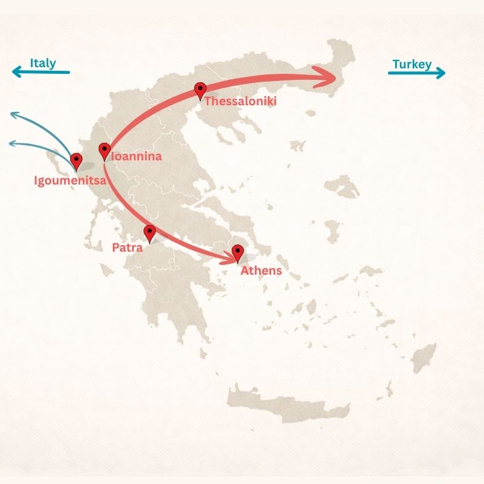
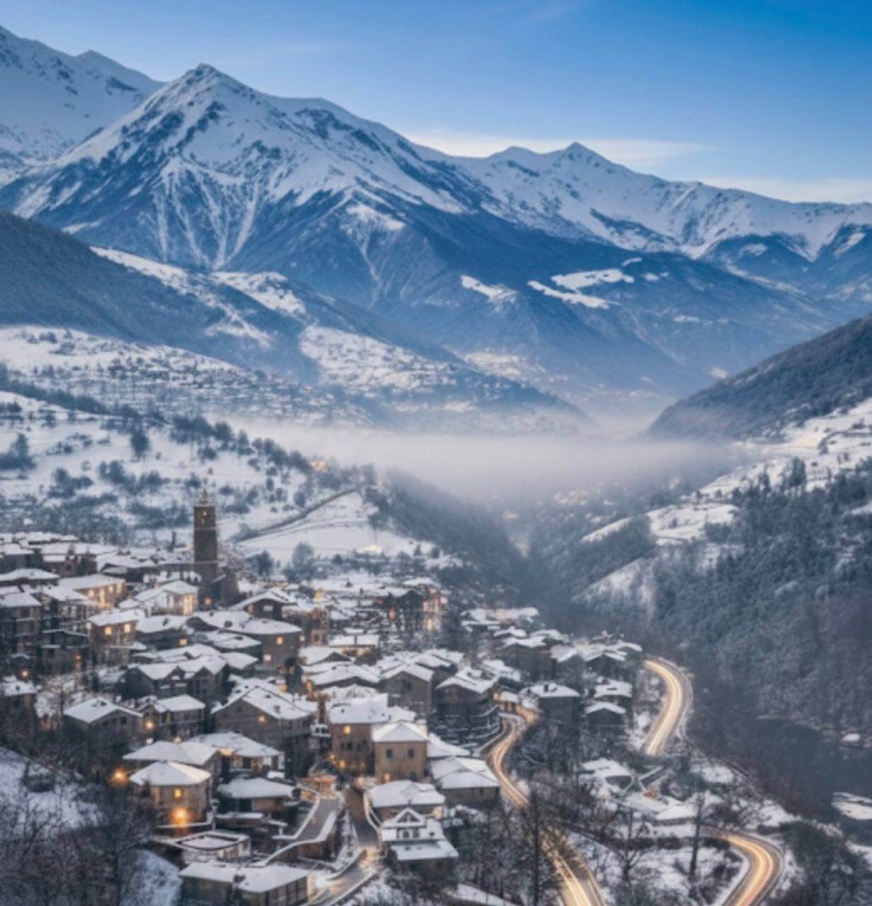
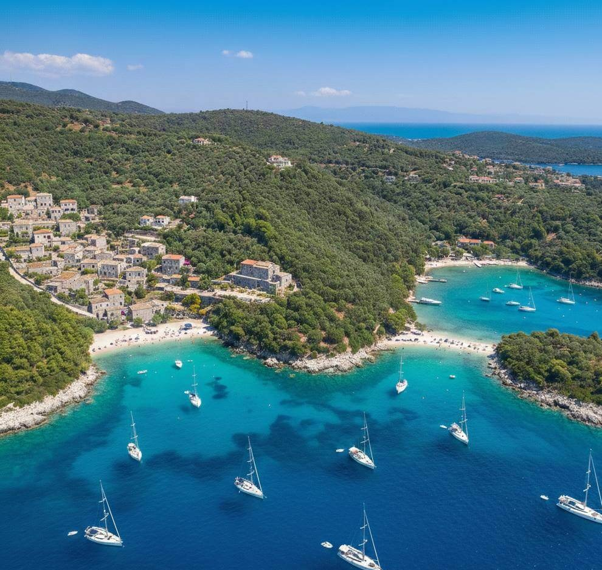
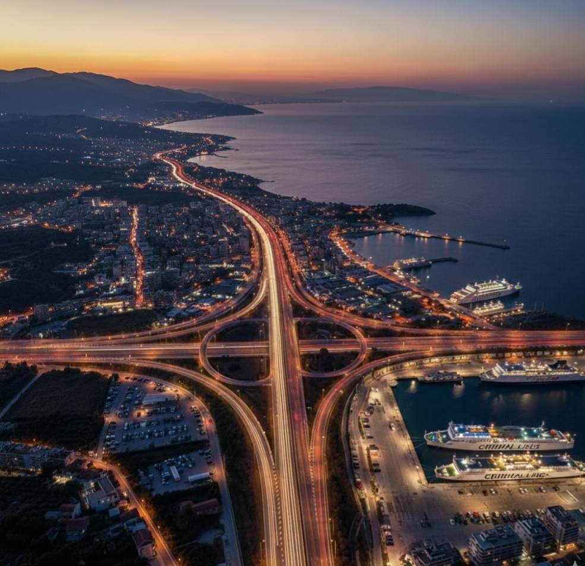

The region
Four seasons, three distinct markets, and an infrastructure build-out that has been accelerating since 2020. Most international investors discovered it in the last two years. The window is still open.
Geography
Epirus is often described as remote. The geography does not support that. The Port of Igoumenitsa is the principal maritime gateway between Greece and Italy — the Grimaldi Group's strategic investment there is not a philanthropic gesture. Igoumenitsa handles significant freight and passenger traffic and is midway through a privatisation process that includes a new cruise terminal.
Air connectivity is direct: Aktion airport (PVK) and Ioannina airport (IOA) receive seasonal and year-round routes from London, Berlin, and Vienna. The Egnatia Odos puts Athens three and a half hours by road. Thessaloniki is under two hours via Ionia Odos.
Twenty minutes by boat from Sivota is Corfu — one of the most expensive and consistently traded island markets in Greece. The price differential between the two coastlines reflects the time it has taken for demand to cross the channel, not a difference in the underlying asset.

Ioannina
Ioannina is a university city of 115,000. It hosts Greek offices of TeamViewer, Deloitte, PwC, and P&I — a fact that has a direct and measurable effect on the rental market. High-earning IT professionals and auditors need quality accommodation year-round. The supply of that accommodation remains inadequate.
The result is a hospitality and residential market that operates across twelve months rather than the four-to-six that define most Greek destinations. An asset in Ioannina carries fundamentally different risk parameters than a hotel on a seasonal island — the cash flow does not pause in October.
The city also sits 90 km from the Albanian border, which has made it a regional logistics hub and a quiet beneficiary of cross-border commercial activity.
Zagori
The Zagori region contains 46 stone villages, each preserved under a unified UNESCO designation. The architecture is not reconstructed — these are working settlements that have maintained their character because the geography made large-scale development impractical. That same geography now functions as a barrier to entry for competitors.
Vikos Gorge holds a Guinness record for depth relative to width. The hiking and nature tourism that this attracts operates from April through November. The ski resorts at Metsovo and Vasilitsa extend the demand window through winter — operating from November to April at a standard that draws visitors who would otherwise travel to the Alps.
The traveller profile — high income, values authenticity, avoids mass-market destinations — does not negotiate aggressively on price. Average daily rates in quality Zagori properties have moved consistently upward for five consecutive years.

Sivota coast
The beaches at Bella Vraka and Pisina record 100% water transparency. This is not a marketing claim — it is a measurable characteristic that places the Sivota coastline among the clearest water in the Mediterranean. The area consistently appears in European rankings for water quality, and that visibility drives demand.
Sivota is a natural yachting hub. From there, Lefkada is 45 minutes, Paxos is an hour and a half, Antipaxos less than two hours. Corfu is twenty minutes by boat. The island archipelago that begins at Sivota is among the most actively traded sailing routes in the Ionian.
Waterfront land in Sivota is scarce by geography — a coastline of this quality has a fixed supply. Unlike regulatory scarcity, which can change with government policy, this constraint is permanent. It is why prices here have not followed the correction patterns seen in oversupplied markets elsewhere in Greece.
View coastal investment properties
Infrastructure
Property values respond to infrastructure investment with a lag. The highway connections — Egnatia Odos east-west and Ionia Odos north-south — were completed and extended over the last decade and are now functioning at full capacity. Travel times to major Greek cities dropped by 40–60%.
The Igoumenitsa port privatisation is an active process with a signed agreement and a timeline. The new cruise terminal under construction will add a category of visitor that does not currently use the port. Regional gasification is scheduled for completion in 2026 and will affect operating costs for commercial real estate meaningfully.
The pattern is consistent across European markets: infrastructure precedes price appreciation by three to seven years. In Epirus, the infrastructure is arriving now.

Market dynamics
The combination that defines a good entry point in any market is straightforward: demand growing faster than supply. In Epirus, tourism arrivals grew 20% year-on-year while the supply of 4- and 5-star hotel rooms grew at a fraction of that rate.
Athens absorbed the majority of hotel development investment over the last decade. The Aegean islands followed. Epirus did not. The result is a market where operators report consistent occupancy pressure and guests report consistent difficulty finding quality accommodation at peak periods.
Unlike an overheated market, this one still has assets available at prices that reflect historical values rather than anticipated growth. That window closes when institutional capital arrives in volume — which, based on the infrastructure and tourism data, is a matter of when rather than whether.
| Athens / Islands | Epirus | |
|---|---|---|
| Seasonality | 4–6 months | 12 months — 4 seasons |
| Entry point | High (€€€) | Attractive (€€) |
| Growth potential | Capped / stable | High — market in ascent |
| Demand type | Mass market | Exclusive, tech, eco-luxury |
| Supply of quality assets | Saturated | Acute deficit |
| Golden Visa threshold | €800,000 | €250,000 |
A selection of off-market and pre-market assets in Ioannina and the surrounding region. Financial parameters available on request.